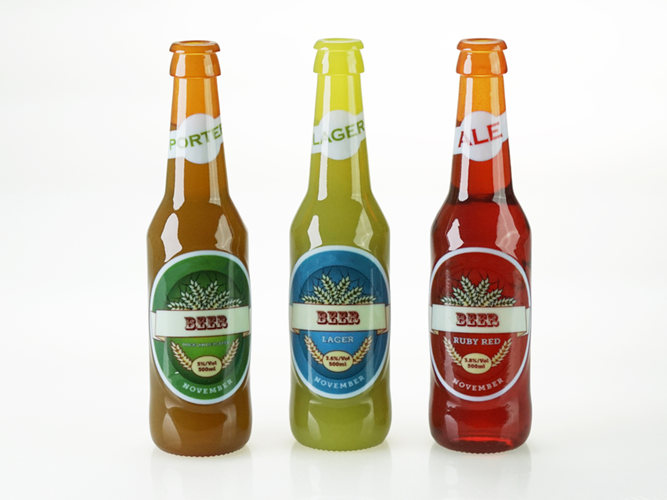

Services

COMPLETE SYSTEM DESIGN
DPP engineers and technicians provide in depth expertise to deliver the most successful product engineering results possible. Our talented team is made up of engineers that specialize in technical markets applicable to any stage of a product’s development. From back of a napkin sketch to proof-of-concept through design and assembly, we’ll drill down to identify the most challenging, highest-risk areas of the project. We then determine the best path to simplifying the design to achieve results such as decreased bill of materials cost, lower part counts, and improved reliability.
From back of a napkin sketch to proof-of-concept through design and assembly, we’ll drill down to identify the most challenging, highest-risk areas of the project. We then determine the best path to simplifying the design to achieve results such as decreased bill of materials cost, lower part counts, and improved reliability.
MJF By HP

With groundbreaking speed and robust material properties, Multi Jet Fusion (also known as MJF or HP 3D printing) will speed your project's time to market. Our 3D Manufacturing Center is powered by 24 HP Jet Fusion 3D printers, and has the capability to produce hundreds of thousands of production parts each week. With our upgraded capacity combined with MJF's incredible speed and material properties, we can now fulfill high volume production orders - faster than ever.
HP's 3D printing technology utilizes fusing and detailing agents over a powdered nylon 12 building area, with infrared lamps fusing an entire layer in a single pass. This highly efficient method can build functional, geometrically complex parts 80 micron layers at a time - with mechanical properties that rival injection molded parts.
With this modern production process, you are not captive to traditional manufacturing design constraints or required to make large capital investments for tooling. This manufacturing process delivers parts within days, allows you to make design revisions as needed, receive parts just in time, and in turn deliver products to market faster.
Next-Day MJF Printing Available
DPP takes you from innovation to production with speed, quality, and competitive pricing. We produce millions of high-quality prototype and production parts daily and ship right to your door the very next day*.
BENEFITS
APPLICATIONS
USE CASES

DMLS

The ultimate in speed and precision for metal 3D printing, Direct Metal Laser Sintering (DMLS), also known as SLM (Selective Laser Melting), additively manufactures 99% dense metal prototypes and end-use parts. Producing fine featured parts with the strength and durability comparable to forged parts, the DMLS process is ideal for functional components requiring fast lead times and a design freedom that you do not get with traditional machining.
In this process, dual 400-watt lasers micro-weld alloy powders at 30 micron layers as a bi-directional recoater blade deposits the next layer of alloy powder. With the unique dual laser features, this technology builds robust, metal prototypes and end-use parts with remarkably accurate features.
BENEFITS
APPLICATIONS

SLA

The veteran of all additive technologies, Stereolithography is known as the original 3D printing process for producing rapid prototypes and show models since 1989. This process (commonly referred to as SLA) utilizes a UV laser that cures parts one layer at a time in a photo-reactive epoxy resin. Widely regarded as one of the most accurate of the additive technologies, the Stereolithography 3D printing process is a popular choice amongst engineers looking for fine detailed, small featured parts as well as extraordinarily large components.
With both large-format and high-resolution SLA equipment, we can build parts as fine as .002" layer thickness on our high resolution Viper equipment - virtually overnight from your CAD data. We also offer a broad variety of resins to suit your rapid prototyping needs.
BENEFITS
APPLICATIONS

Polyjet
Vibrant color options and one of the fastest of our technologies, the PolyJET process is an ideal choice for attractive, high precision models needed quickly. PolyJET 3D printing rapidly produces parts with astonishingly fine detail, smooth surfaces, and precision. The technology works with a vast array of materials, including rigid opaque in hundreds of vibrant colors, clear and tinted translucent shades, rubber-like flexible materials, and specialized photopolymers for 3D printing in the dental, medical and consumer product industries.
WSimilar to an inkjet printer, this process jets layers of liquid photopolymer that is instantly cured with UV lights attached to the print heads. This speedy process creates fine layers for high resolution parts (up to 16 microns) that are produced quickly, sometimes in the same day. PolyJET is also popular for its ability to print multiple materials, durometers, and colors in one print - as well as living hinges, overhangs, and complicated geometries without needing to be assembled.
BENEFITS
APPLICATIONS

SLS

Selective Laser Sintering (SLS), also known as plastic laser sintering, uses Nylon based powders to build robust plastic parts. True to powder bed 3D manufacturing processes, SLS builds parts one layer at a time with the thermal energy of a laser in the Z axis - without support structure. Additionally, due to its nylon base material, it produces more robust parts that are approved for use in many end use production aerospace applications. Furthermore, as an added benefit to the technology, materials with filler added to the nylon are available for producing even stronger parts.
BENEFITS
APPLICATIONS
PROCAST

For a short-run of functional and aesthetically pleasing production parts, ProCAST RTV - our proprietary Urethane Casting process - is the next step after a 3D printed prototype. The ProCAST process utilizes SLA, FDM, or PolyJET master model patterns to create the highest quality cast urethane parts available.
Our ProCAST Urethane Casting process is ideal for higher quantities (from 10 to 1000) and creates parts in both color and texture, giving us the ability to create custom color matched parts with the texture pulled from the mold cavity for a repeatable quality output. Furthermore, we have one of the largest casting chambers in the US, with the capabilities to produce very large, void free cast parts.
One of our flagship offerings, each ProCAST part goes through a 5 point inspection plan at 3 separate manufacturing stages, to control the process and produce aesthetically pleasing and geometrically toleranced end use parts. For projects with in-mold and overmold requirements, we offer a variety of Shore A rubber materials, and in-mold fiber additives to strengthen parts by a factor of 10.
BENEFITS
APPLICATIONS

CNC

Our CNC machining lab is the perfect complement to our suite of additive manufacturing services. The need for subtractive manufacturing using CNC mills, routers, and lathes is crucial to our operation when production grade materials are needed, or to achieve tight tolerances to meet demanding requirements. Utilizing HAAS, Fadal, and C.R. Onsrud equipment with 3, 4, and 5-axis capabilities along with MasterCAM programming software, we produce top-quality prototypes and production runs in a wide variety of materials both standard and exotic. Our skilled programmers and fabricators shore up all of our in-house capabilities, with the focus always being excellent craftsmanship and on-time delivery.
In addition to low volume production, our CNC machining operation supports other services, including post processing of our Direct Metal Laser Sintering (DMLS) department and our proprietary Hybrid RTV Tooling technology.
BENEFITS
APPLICATIONS